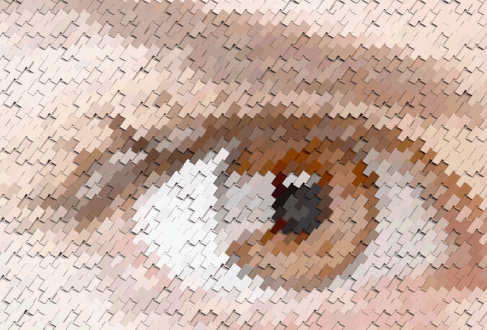

POV‑Ray Mosaic: brief description
Converting 2D image into mosaic of 3D objects
POV‑Ray Mosaic project is a program which read every pixel of source image and convert it into a virtual 3D object, packed side by side with objects created from other pixels, thus forming a grid of 3D-mosaic in POV‑Ray format.
Currently POV‑Ray Mosaic spans all three regular plane partitions for Euclidean tilings, namely 36, 44, and 63.
POV‑Ray Mosaic is free open source Python program, so you can download POV‑Ray Mosaic from GitHub together with detailed help file and numerous presets/extensions. All non-standard modules included into distribution, so program is supposed to work right out of the box with any standard installation of Python 3.11 and above.
POV‑Ray Mosaic is a sort of lab for exploration: while default exported scenes show primitive objects like spheres packed into planar grid, they contain numerous options, grouped into human-editable form, to easily redefine almost anything.
Update: Well, I guess a lot can happen to a species in three Drahn, like turning green and evil. And this page was not updated for a long time. But POV‑Ray Mosaic was.
In version 1.22.01.09 scene output was accelerated due to more reasonable buffering control.
Previously in version 1.19.5.19 mosaic element transparency (both filter and transmit) are changed from global constants to functions of source pixel brightness and alpha, thus enabling more interesting handling of glass and similar materials. Surely, since constant is just a particular case of a function, old capabilities haven't gone.
In a long way to version 1.19.1.7 output scene syntaxis was improved, adding more options (like fully blown textures instead of initial simple finish plus normal), improving auto focus and viewing angle fit with more legible internal math, and so on.
Standalone programs converted to POV‑Ray export modules, joined with PNG and PPM reading modules under single GUI.
Numerous preset includes added, including (sorry for a tautology) a couple of concept-illustrating yet funny ones. For example, on the right you are supposed to see a sequence of renderings of a single preset. In this preset, prism object geometry is time-dependent and changes every time you press "Render" in POV‑Ray, thus making every rendering unique (isn't it an artist's dream - make all masterpieces unique and follow the time flux?).
It's noteworthy that while prisms with such a presets often become star-like, they still form a seamless pattern without gaps and overlaps.
All preset .inc files are made self-rendering, that is, you may simply add them all to POV‑Ray batch and render some preview of the object defined within this include, thus adding a visual reference to your preset collection. Take into account that object color and finish in such a rendering will be dummy grey and dull, since normally the are overridden by main scene file.
POV‑Ray Mosaic output scene files contain several predefined 3D objects description, along with finishes and normal modifiers for them. Object properties may be easily mapped to source image pixel brightness via any of predefined transfer functions, or functions you write yourself.
63zaika output with predefined hexagonal prisms, height mapped to brightness via predefined function.
Surely you can not only switch between predefined stuff and edit parameters like rotation and size (although this alone will give you numerous combinations), but also insert your own objects, functions and values. The easiest way to do so is using external "preset.inc" patch files which, upon importing into main scene file, will override all previous settings. For example, preset file "44_dice.inc" (included in distribution) for rendering image below is about only 2,51 kb, yet contains both dice 3D object and all necessary "flip" instructions, and may be plugged into your scene with editing just one line.
Now it's time to download POV‑Ray Mosaic from GitHub and start building your own mosaic scenes. And, surely, once you manage to build something interesting, don't forget to show it to other humans and lesser species.
...or Move back to Dnyarri`s Python freeware main page.